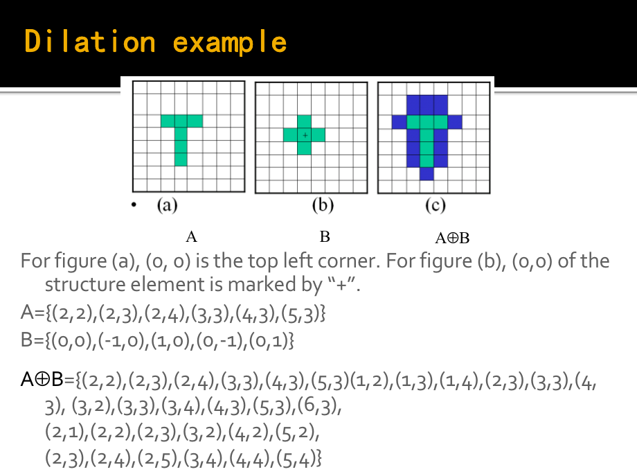
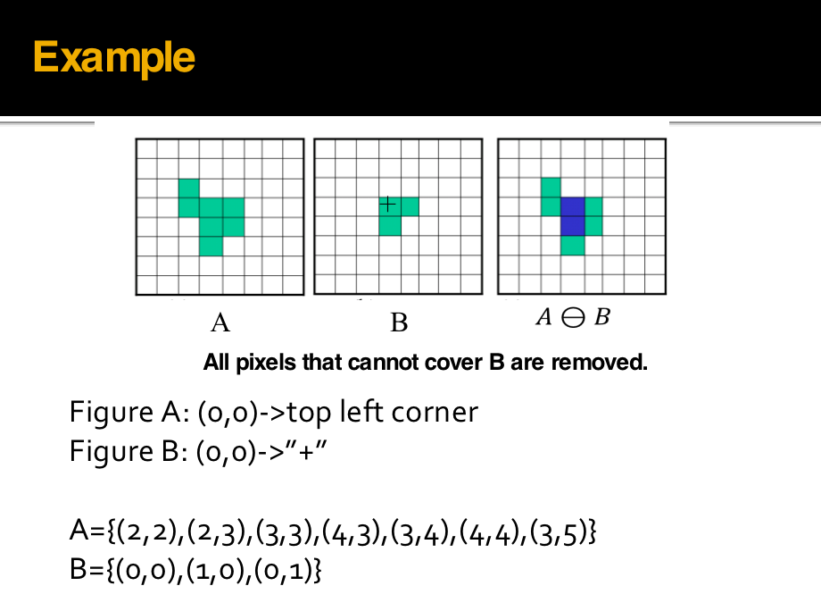
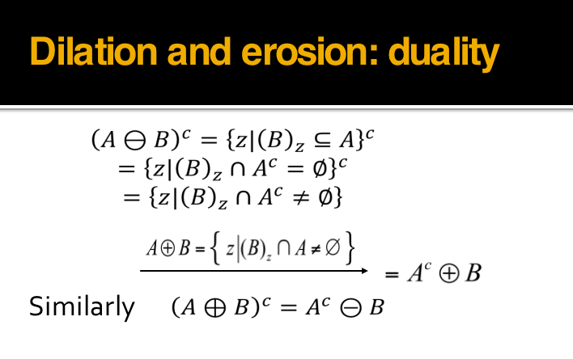
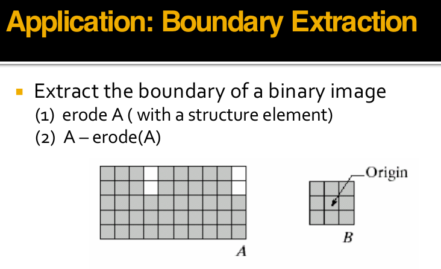
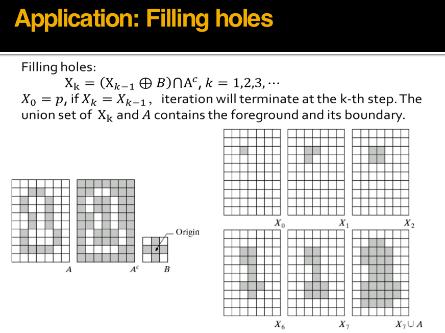
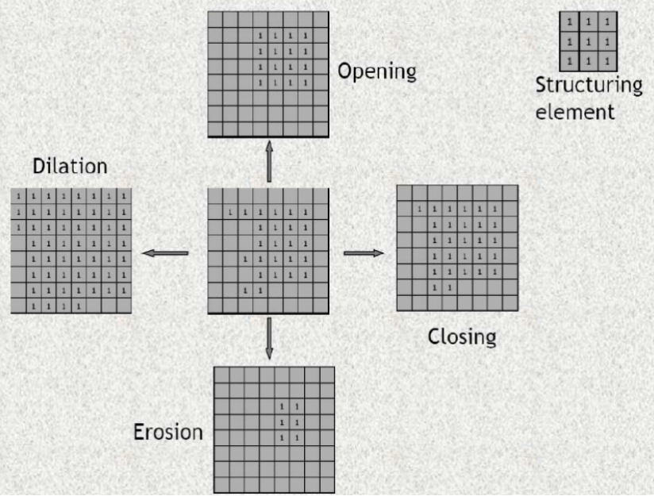
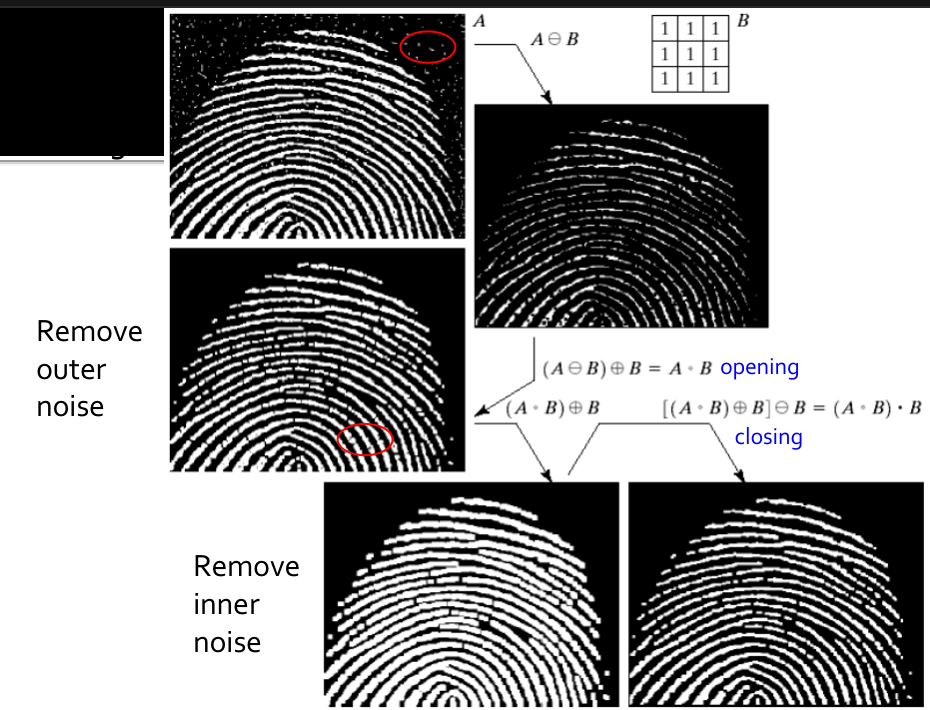

Binary Image and Morphological Operation¶
Binary image¶
优点：更小的内存需求 运行速度更快 为二值图像开发的算法往往可以用于灰度级图像 更便宜 缺点：应用范围毕竟有限； 更无法推广到三维空间中表现力欠缺，不能表现物体内部细节无法控制对比度
图像二值化：¶
（1）二值图像¶
二值图像（Binary Image）中，像素值限定为 \(0\) 或 \(1\)（编程中一般用 \(0\) 和\(255\) 来构造二值图像)。
- 优点：占用更少内存、更高效，有时可应用于灰度图像，同时更加便宜。
- 缺点：应用领域有限，不能用于三维数据，表达能力较弱，难以传达视觉细节，也不能控制对比度。
（2）大津算法（Otsu's algorithm）¶
在把灰度图转换为二值图像的时候，一个基本的想法是找到一个合适的阈值（Threshold），像素点值比阈值大的设为\(255\)，比阈值小的设为\(0\)。即为如下：
\(\left\{ \begin{array}{**lr**} I(x,y) = 0\ if\ I(x,y)\leq Threshold \\ I(x,y) = 255\ if\ I(x,y)\geq Threshold \\ \end{array} \right.\)
- 而大津算法就是一种自动确定该合适阈值的方法，旨在找到一个阈值，将图像分成两个类别（前景和背景），以使两个类别内的方差最小，同时两个类别之间的方差最大，步骤如下。
a.统计像素点的最大值和最小值
b.对于每个可能的阈值，计算分成两个类别后的背景和前景的内部协方差和外部协方差。
c.选择最大外部和最小内部协方差对应的 threshold作为二值化阈值。
d.应用选择的阈值将图像分割成前景和背景。
其中，最大外部方差和最小内部方差是等价的，我们选择找到最大外部方差，推导过程如下：
设图像尺寸为\(M\ *\ N\)，其二值化的最佳阈值为\(T\)，该阈值将图像分为背景和目标两个类别。其中属于背景的像素点数量为\(N0\),属于目标的像素点数量为\(N1\),背景像素点数占整幅图像的比例\(\omega0\),其灰度均值\(μ0\),目标像素点数占整幅图像的比例为\(ω1\),其灰度均值为\(μ1\) ，整幅图像的灰度均值为\(\mu\)。
\(\omega_0=\frac{N0}{M*N}\\\) \(\omega_1=\frac{N1}{M*N}\) \(N0+N1=M*N\\\) \(\omega0\ + \omega1\ = 1\\\)
\(\mu = \frac{\mu0*N0+\mu1*N1}{M*N}=\mu0\omega0\ + \mu1\omega1\\\)
\(类内方差(Within-class\ variance)公式:\)
\(\sigma_{Withen}^{2}=\omega_{0} \sigma_{0}^{2}+\omega_{1} \sigma_{1}^{2} \\\)
\(类间方差(Between-class\ variance)的公式:\sigma_{Between}^{2}=\sigma^{2}-\sigma_{Within}^{2}\\\)
\(有此可推导得到\)
\(\sigma_{Between}^{2}=\omega_{0}(\mu_{0}-\mu)^{2}+\omega_{1}(\mu_{1}-\mu)^{2}\)
\(\ \ \ \ \ \ \ \ \ \ \ \ \ =\omega0(\mu0-\omega0\mu0-\omega1\mu1)^{2}+\omega1(\mu1-\omega0\mu0-\omega1\mu1)^{2}\) \(\ \ \ \ \ \ \ \ \ \ \ \ \ =\omega0(\omega1\mu0-\omega1\mu1)^{2}+\omega1(\omega0\mu1-\omega0\mu0)^{2}\\\) \(\ \ \ \ \ \ \ \ \ \ \ \ =(\omega0\omega1^{2}+\omega1\omega0^{2})(\mu1-\mu0)^{2}\\\)
\(\ \ \ \ \ \ \ \ \ \ \ \ =\omega0\omega1(\mu0-\mu1)^{2}\\\)
- 即在计算最大外部和最小内部方差时，只需判断\(\omega0\omega1(\mu0-\mu1)^{2}\)取得最大值即可
Step 1: 确定原始图像中像素的最大值和最小值
Step 2: 最小值加1作为初始threshold对原始图像进行二值化操作
Step 3: 根据对应关系确定前景和背景，分别计算当前threshold下的内部协方差和外部协方差
Step 4: 回到Step 2直到达到像素最大值
Step 5：找到最大外部和最小内部协方差对应的threshold.
- 前述thresholding策略推广到彩色图像，同时考虑rgb三个通道，我们就可以针对特定的色彩进行thresholding操作，
改进¶
- 局部自适应操作设定一个局部窗口，在整个图像上滑动该窗口
-
对于每一窗口位置，确定针对该窗口的threshold
-
相比全局大津法，我们依次枚举灰度图中的每个像素\(（i,j)\)，以用户输入一个整数为边长，在\((i - length / 2, j - length / 2, i + length / 2, j + length / 2, i, j)\)这个正方形中进行大津法，得到阈值后仅对\((i,j)\)点进行二值化处理。
-
相比全局大津法，局部大津法耗时显著增加。
Morphological Operation¶
数学形态学（也称图像代数）是一种用于分析图像形态和结构的工具。其基本思想是通过利用结构元素来度量和提取形状，从而实现对图像的分析和识别。图像形态学操作基于集合论，可以简化图像，去除不需要的结构，同时保留主要的形状特征。在这里有四种形态学操作符：膨胀、腐蚀、开运算和闭运算。
在下面的介绍中，我们的 A 指二值图像; B 指二值模板，称为结构元(structure element)。
膨胀¶
形态学的膨胀操作是图像处理中的一种基本操作，通常用于增强图像中的特定目标或结构，使其更加显著和容易检测。膨胀操作的主要思想是利用一个称为结构元素的小窗口或模板，沿着图像的各个方向扫描，并根据结构元素与图像的重叠程度来改变图像的像素值。
膨胀操作的结果通常是增强了原始图像中的目标或特定结构。这是因为它可以将目标区域扩展，填充空洞，使边缘更加清晰。因此，膨胀操作可用于改善图像中的特定特征，使它们更容易检测和分析。 $$ A⊕B={ z|(B)_z ∩A\ne∅ } $$

-
Dilation: Bridging gaps in images
-
由B对A膨胀所产生的二值图象D是满足以下条件的点(x,y)的集合：
如果B的原点平移到点(x,y)，那么它与A的交集非空。
腐蚀¶
形态学的腐蚀操作是图像处理中的一种基本操作，通常用于减小图像中的特定目标或结构，从而弱化或消除一些特征。腐蚀操作的主要思想是利用一个称为结构元素的小窗口或模板，沿着图像的各个方向扫描，并根据结构元素与图像的重叠程度来改变图像的像素值。
腐蚀操作的结果通常是减小了原始图像中的目标或特定结构。这是因为它可以去除小的特征、缩小目标区域或消除噪声。腐蚀操作可用于弱化图像中的特定特征，使其更容易检测和分析。 $$ A⊖B={(x,y)|(B)_{xy} ⊆A} $$

- 由B对A腐蚀所产生的二值图象E是满足以下条件的点(x,y)的集合：
如果B的原点平移到点(x,y)，那么B将完全包含于A中
Duality¶

Application: Boundary Extraction¶

Application: Filling holes！¶

开操作¶
形态学的开操作是一种常见的图像处理操作，它结合了腐蚀（erosion）和膨胀（dilation）操作，通常用于去噪和分割图像中的目标。开操作的主要思想是首先对图像执行腐蚀操作，然后再对其执行膨胀操作，这个过程通常使用一个特定的结构元素进行。
开操作在图像处理中常用于去除噪声、分割目标、减小目标区域的不规则性以及减小目标之间的干扰。它也有助于改善二值化图像的质量，以便后续的分析和特征提取。 $$ A ◦ B = (A ⊖ B) ⊕ B $$
- 用来在纤细点处分离物体，消除小物体、平滑其边界的同时并不明显改变其面积。
闭操作¶
形态学的开操作是一种常见的图像处理操作，它结合了腐蚀（erosion）和膨胀（dilation）操作，通常用于去噪和分割图像中的目标。开操作的主要思想是首先对图像执行腐蚀操作，然后再对其执行膨胀操作，这个过程通常使用一个特定的结构元素进行。
闭操作在图像处理中常用于去除小孔、连接断开的线条、填充不规则目标的内部空洞、增强图像中的连通区域，平滑其边界的同时并不明显改变其面积。它也有助于改善二值化图像的质量，以便后续的分析和特征提取。 $$ A • B = (A ⊕ B) ⊖ B $$  
创建日期: 2023年11月5日 11:09:32